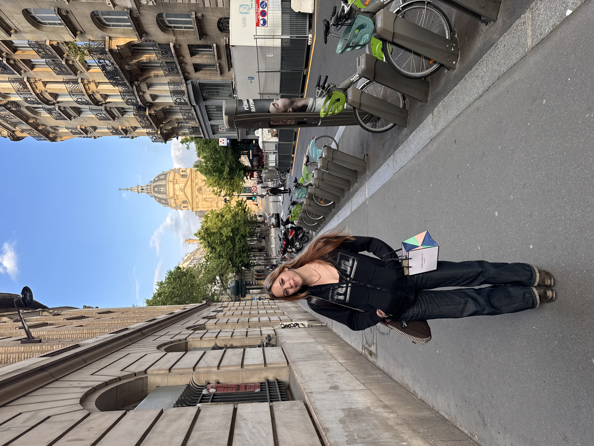
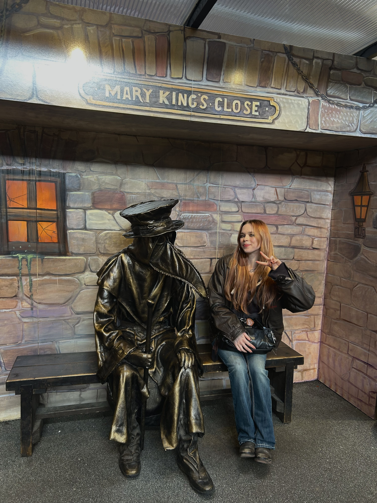

C++
Advanced
Hello, I'm
Computer Science Student
Get To Know More
Senior at Fordham University
B.S. in Computer Science, Expected May 2027
Treasurer, Women's Club Squash
Girls Who Code
AI Summit New York Hackathon
I'm a Computer Science student at Fordham University (B.S., May 2027) who loves building things people actually use.
Right now, I'm a Business & Technology Intern at Wellsite LMS, where I build interactive, scenario-based training modules for wellsite operators. I create 3D assets and animations in Blender to illustrate equipment operation and safety procedures, and I use Claude Code to speed up development and automate repetitive parts of the build process. It's taught me how to turn complicated technical material into something clear and usable, and how to work AI tools into a real workflow.
My favorite thing to build is on the web. I enjoy writing HTML, CSS, and JavaScript and turning ideas into polished, working interfaces. I also like going deeper into how things work: in my Machine Learning course, I trained models in Python to make predictions using algorithms like linear regression and k-nearest neighbors, and in Operating Systems I'm working in C on Linux. Before this, I was a blockchain research intern at Johns Hopkins, where I wrote Python scripts to analyze Bitcoin transaction data and identify ransomware payment patterns.
Outside of class, I tutor CS students in data structures, algorithms, and OOP, and I tutor elementary and middle school students in the Bronx. I'm the treasurer of Fordham's Women's Club Squash Team and a member of Girls Who Code. I also competed in The AI Summit New York Hackathon in December 2025, sponsored by Dell and NVIDIA.


Explore My
Advanced
Advanced
Advanced
Advanced
Intermediate
Intermediate
Basic
Basic
Version Control
Development
Management
Architecture
Backend & Database
AI Development
3D Modeling & Animation
E-Learning
LMS Platform
Workflow Automation
I build interactive, scenario-based training modules for wellsite operators in Articulate Storyline, turning technical procedures into engaging e-learning. To show how equipment works and how to stay safe, I create 3D assets and animations in Blender that illustrate equipment operation and safety procedures. I also use Claude Code to speed up development, automating repetitive parts of module building and content formatting. I use Supabase to manage client data and n8n to automate workflows. The role has taught me how to turn complicated technical material into something clear and usable, and how to work AI tools into a real workflow.
I mentor undergraduate students in core Computer Science concepts, focusing on Data Structures, Algorithms, and Object-Oriented Programming. I translate complex technical logic into clear explanations, help students debug their code, and work with them to build stronger problem-solving habits.
Through Fordham, I tutor elementary and middle school students at a refuge center in the Bronx as part of an afterschool program. Most of my time goes to homework help across all subjects, working with students to get through their assignments.
Selected through a competitive application process to take part in a hackathon sponsored by Dell and NVIDIA. My project idea built on my Johns Hopkins blockchain research: an AI agent that would monitor the blockchain and keep a running list of transactions that look like potential ransomware payments. I got hands-on time developing on a Dell Pro Max with GB10, a compact deskside AI workstation built around the NVIDIA GB10 Grace Blackwell Superchip. It was my first time working with GPU-accelerated AI hardware. This was a huge step up from anything I'd ever worked on before. I learned so much, and it made me want to learn even more about AI.
During high school, I worked with a Johns Hopkins research team, including an Associate Professor of Computer Science and two of his PhD students, to study how ransomware payments move through the Bitcoin blockchain. I wrote custom Python scripts to organize and store large datasets of transaction history, which improved data retrieval speed, and ran statistical analysis on Bitcoin transactions to identify illicit payment patterns. I also queried ransomware addresses and built charts and graphs from the data to learn how past payments can be followed through the blockchain. COVID-19 kept the work mostly theoretical, but it strengthened my skills in reading complex scientific papers and analyzing data. I wrote and presented a research paper summarizing my findings.
As Assistant Manager, I trained employees and led daily shop operations whenever the manager was out, overseeing staff, inventory, and customer service. I kept things running smoothly during busy, high-pressure shifts while handling customer needs, payment processing, and opening and closing procedures.
Get in Touch